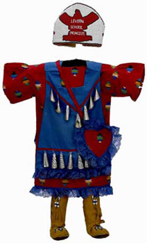

The
Powwow and Native American Life in the Twenty-first
century
"Powwow
is a celebration of cultural values and unites Indian
people across geographical and social boundaries.
People enjoy the beauty of the dance, music, art
and clothing and the opportunity to get together
with family and friends."
JoAllyn
Archambault
Native populations declined catastrophically,
largely because of the effects of introduced diseases
to which Indian people possessed no immunity.
Before European contact the population of Native
North America may have been three to eight millions.
In 1900 there were only a few hundred thousand
people left. In the nineteenth century population
decline was combined with the loss of traditional
life style, through the disappearance of buffalo
and alienation of land. However from 1900, and
particularly from the 1930s Native sense of identity
was strengthened, and population numbers recovered.
The rights to use Native languages, ceremonies
and religion, which had been banned in the nineteenth
century, were gradually restored. A central feature,
visible to non-Natives, of this revival was the
Powwow.
The term 'Powwow' derives from an Algonquian word
meaning 'meeting' or 'shaman'. This event developed
from nineteenth century warrior dances, and other
ancient traditions celebrating health and well-being.
Being non-religious in character Powwows did not
attract criticism from non-Native Americans.
Today most Native peoples take part in these
summer festivals, and travel across the continent
to be with friends and relations, camping out
for several days at a time.
Competitive dancing is an important aspect of
the Powwow leading to the development of many
clothing styles, often incorporating highly decorated
schemes of featherwork, ribbon-work and beadwork.
Prominent competitors may change their costumes
every year. Succesful dancers are able to earn
a semi-professional livelihood from the substantial
prize-money offered. These are particularly made
available at powwows sponsored by Indian casinos.
Powwows communicate Native values to non-Natives.
|
|
 |
|
Shoshone
beadwork, for use in Powwows, c. 2003.
Presented by Mr. and Mrs. Morton I. Sosland.
|
Blackfoot
girl's jingle dress,
with princess' crown. Donated
by Mr. and Mrs. Morton I. Sosland |
|
|
Dennis Zotigh in men's Fancy Dance outfit,
visiting the British Museum 2003 (photo:
A. Komlosy)
|
|
|
Laine Thom, Shoshone, in Powwow costume speaking
at the British Museum, 2003 (photo: A. Komlosy) |
|